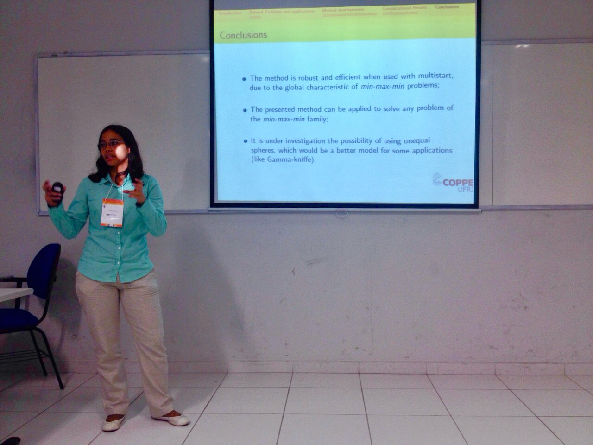
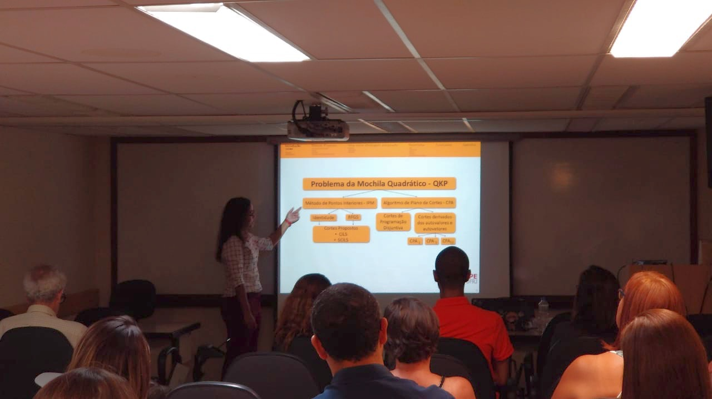

More about me

D.Sc. in Systems Engineering and Computer Science, 2019
Federal University of Rio de Janeiro, UFRJ
M.Sc. in Systems Engineering and Computer Science, 2014
Federal University of Rio de Janeiro, UFRJ
B.Sc. in Mathematics, 2011
Federal Rural University of Rio de Janeiro, UFRRJ
Since June 2021, I am a postdoctoral researcher at the
Departament of Combinatorics and Optimization
of the
University of Waterloo.
My postdoctoral advisors are Prof.
Fukasawa
and Prof.
Sandoval.
I am working with the scheduling problem.
In January 2020, my article "Parametric Convex Quadratic Relaxation of the Quadratic Knapsack Problem", was selected a highlighted article of EJOR.
The main contribution of this paper was the new valid inequalities derived from cover and knapsack inequalities for the quadratic knapsack problem.
These inequalities can also be applied to more general relaxations of binary quadratic programming problems.
From November 2018 to April 2021, I was a researcher at IDados,
where I developed optimization models to solve real-world problems. My main attribution was modeling and propose solutions for problems in
public educations. I applied optimization techniques to redesigning the transport network, the schools system and to choose the best place to expand and/or build new schools.
During my Ph.D., in 2017, I was a visiting researcher in the Combinatorics and Optimization department
at the
University of Waterloo,
where I worked together with Prof. Henry Wolkowicz and Fei Wang.
Interests
- Combinatorial Optimization
- Semidefinite Programming
- Mixed-Integer Nonlinear Programming
ADMM for the SDP relaxation of the QAP and QKP
XIX International Conference on Integer Programming and Combinatorial Optimization IPCO.
July 2017 - Waterloo, Canada.
Upper bounds for the binary quadratic knapsack problem
XLVII Simpósio Brasileiro de Pesquisa Operacional - SBPO
August 2015 - Porto de Galinhas, Pernambuco.
Covering of Solid Bodies by Spheres via Flying Elephants Method
11th Metaheuristics International Conference.
June 2015 - Agadir, Marrocos.
Solving Medium and Large Size Problems of the Literature by the Accelerated Hyperbolic Smoothing Clustering Method
XLVI Simpósio Brasileiro de Pesquisa Operacional.
Setember 2014 - Salvador, Bahia
Solution of the Problem of Covering Solid Bodies by Spheres using the Hyperbolic Smoothing Technique
XLVI Simpósio Brasileiro de Pesquisa Operacional.
Setember 2014 - Salvador, Bahia
Ph.D. Thesis (in Portuguese)
M.Sc. Dissertation (in Portuguese)
Articles in Scientific Journals
- Fampa, M.; LUBKE, D.; WANG, F.; WOLKOWICZ, H. Parametric Convex Quadratic Relaxation of the Quadratic Knapsack Problem. European Journal of Operational Research, v. 1, p. 1, 2020.
https://doi.org/10.1016/j.ejor.2019.08.027
This paper was elected highlighted article of European Journal of Operational Research
in January 2020: https://www.journals.elsevier.com/european-journal-of-operational-research/highlighted-articles/ejor-editors-choice-articles-january-2020
- LUBKE, DANIELA CRISTINA; XAVIER, VINICIUS LAYTER; VENCESLAU, HELDER MANOEL; XAVIER, ADILSON ELIAS. Flying elephants method applied to the problem of covering solid bodies with spheres, Int. J. Metaheuristics, Vol. 7, No. 1, 2018.
https://doi.org/10.1504/IJMHEUR.2018.091868
- VENCESLAU, HELDER MANOEL; LUBKE, DANIELA CRISTINA; XAVIER, ADILSON ELIAS. Optimal covering of solid bodies by spheres via the hyperbolic smoothing technique, Optimization Methods and Software, v. 1, p. 1-13, 2014.
https://doi.org/10.1080/10556788.2014.934686
Papers presented in conferences
- COSTA, M.; FAMPA, M.; LUBKE, D. C.; Upper bounds for the binary quadratic knapsack problem, Publicado em anais do XLVII Simpósio Brasileiro de Pesquisa Operacional, 2015, Porto de Galinhas, Pernambuco.
http://www.din.uem.br/sbpo/sbpo2015/pdf/142864.pdf
- LUBKE, DANIELA CRISTINA; VENCESLAU, HELDER MANOEL; XAVIER, ADILSON ELIAS. Solution of the Problem of Covering Solid Bodies by Spheres using the Hyperbolic Smoothing Technique, Publicado em anais do XLVI Simpósio Brasileiro de Pesquisa Operacional, 2014, Salvador, Bahia. v.1 p. 2686-2694.
http://www.din.uem.br/sbpo/sbpo2014/pdf/arq0388.pdf
- LUBKE, D. C.; XAVIER, A. E.; OLIVEIRA, A. A. F.; XAVIER, V. L. Cobertura de corpos por esferas utilizando suavização hiperbólica. Publicado em anais do XLV Simpósio Brasileiro de Pesquisa Operacional, 2013, Natal. v.1 p. 2658-2665.
http://www.din.uem.br/sbpo/sbpo2013/pdf/arq0295.pdf
Summary published in proceedings of conferences
- Fampa, Marcia; LUBKE, DANIELA CRISTINA; Wang, Fei; Wolkowicz, Henry. Extending cover inequalities for the quadratic knapsack problem to relaxations in lifted space. XIX Latin-Iberoamerican Conference on Operations Research - CLAIO 2018.
http://www.sopios.org.pe/static/claio/proceeding.pdf
- M. Fampa, D. Lubke, F. Wang, H. Wolkowicz, “Convexification of the Quadratic Knapsack Problem with Integrated Cut Strengthening”.
Oberwolfach Reports 26 (2019),pp. 19-21. (Proceedings of the workshop on Mixed-integer Nonlinear Optimization: ahatchery for modern mathematics,
Mathematisches Forschungsinstitut, Oberwolfach,Germany, 2019). DOI: 10.4171/OWR/2019/26
- VENCESLAU, HELDER MANOEL; LUBKE, DANIELA CRISTINA; XAVIER, ADILSON ELIAS. The Hyperbolic Smoothing Technique applied to the covering of three dimensional bodies by spheres, 2014, Perpignan, France, June 26-28, Book of Abstracts of EUROPT-2014, v. 1. p. 33-33.
- XAVIER, A. E. ; OLIVEIRA, A. A. F. ; LUBKE, D. C. ; XAVIER, V. L. Optimal Covering of a Solid Body via Hyperbolic Smoothing Technique, 2013, Florence, Italy, June 26-28, Annals EUROPT 2013. v. 1. p. 31-31.
1 / 6

Simpósio Brasileiro de Pesquisa Operacional 2015, Porto de Galinhas, Brazil
2 / 6

Simpósio Brasileiro de Pesquisa Operacional 2014 - Bahia, Brazil
3 / 6

Metaheuristics International Conference (MIC 2015) - Agadir, Morocco
4 / 6

Integer Programming and Combinatorial Optimization 2017 - Waterloo, Canada
5 / 6

Thesis defense 2019 - Rio de Janeiro, Brazil
6 / 6

Thesis defense 2019 - Rio de Janeiro, Brazil
❮
❯